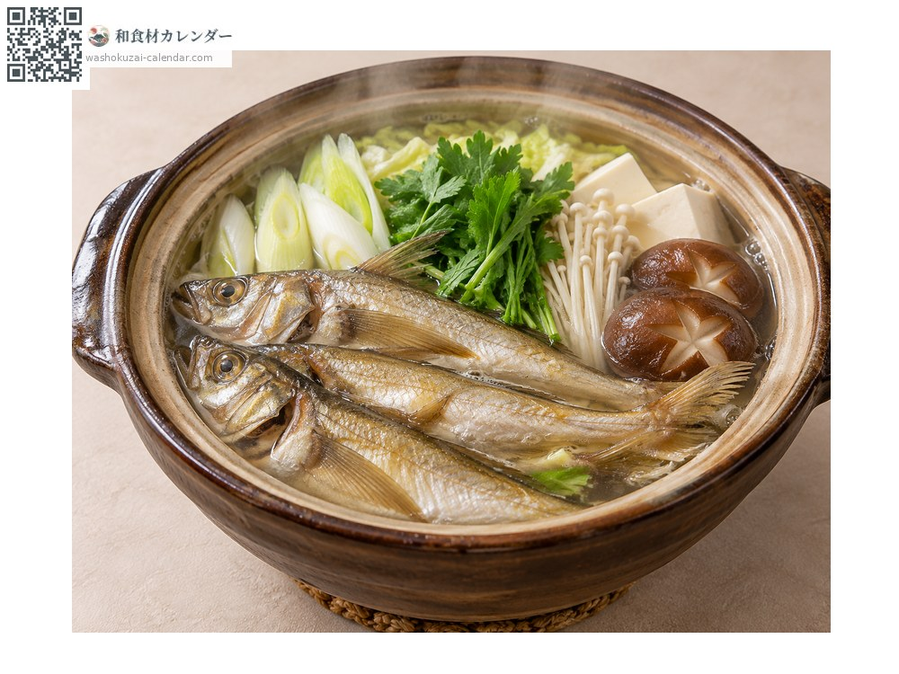
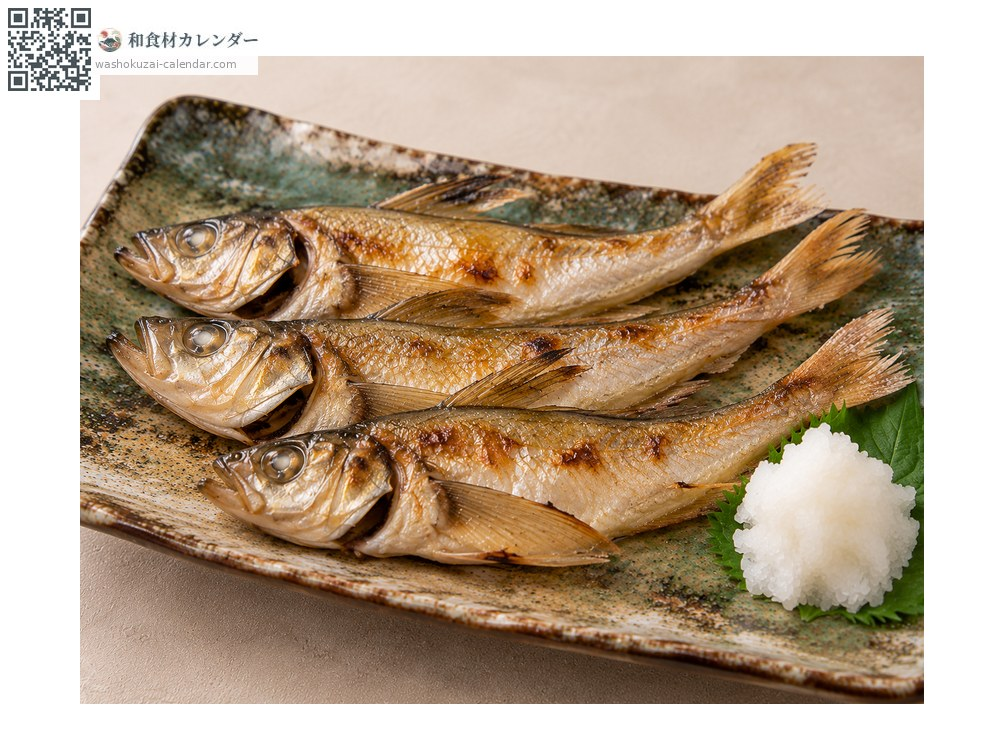
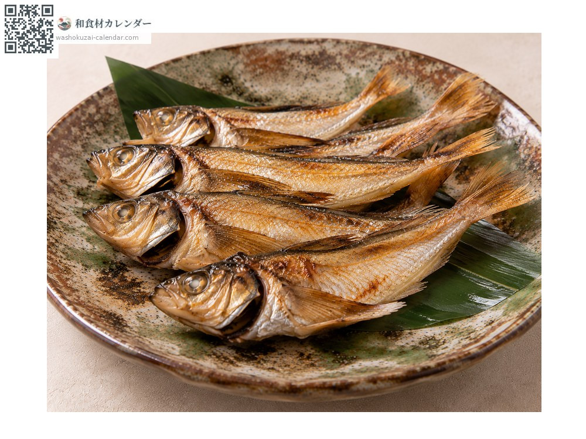
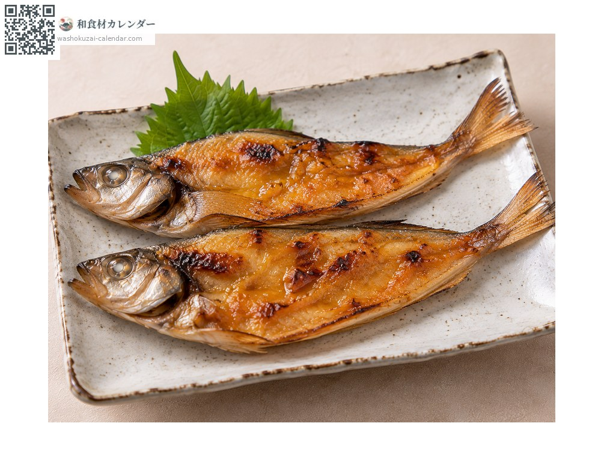

Sailfin sandfish
ハタハタ はたはた hatahata
Also known ashatahata
At its best in Jan, Feb, Nov, Dec

When it is at its best
In seasonAvailable
How to cook

Shottsuru nabe
A hot pot of Akita made with fish sauce, simmered with vegetables.

Shioyaki (salt-grilled)
Grilled whole; it has no scales, which makes it easy to eat.

Dried overnight
Dried overnight, which concentrates the flavour.

Dengaku
Grilled and spread with miso.
How to choose
A firm body. Fish with a swollen belly full of roe are especially prized. Clear eyes.
Storage
Having no scales makes preparation easy. Gut and refrigerate, using within two days.
Main areas
Good to know
The prefectural fish of Akita. It comes inshore to spawn around the season of thunder, which is why its Japanese character combines fish and god. The roe, called buriko, is prized for its distinctive stickiness and bite. It is also the base of the fish sauce shottsuru.